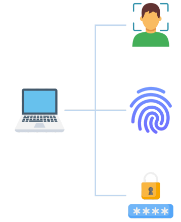

Azure
Arquitectura y Servicios de Microsoft Azure
March 3, 2025
Imagínese que es Blac Friday y muchas personas están haciendo pedidos de una computadora portátil con descuento en una tienda en línea.
Incluso si los pedidos llegan simultáneamente, no se pueden procesar todos a la vez. En lugar de eso, les ponen en fila en una cola. Esta cola garantiza que un sistema automatizado procese cada pedido correctamente, evitando la pérdida de información, especialmente durante épocas de mucha actividad como las compras del viernes negro.
Tablas (Tables)

El servicio de tablas es un almacén de datos NoSQL que se encuentra en cuentas de almacenamiento.
Le permite almacenar y recuperar datos de una manera flexible y sin esquema.
Adecuado para el acceso rápido y escalable a grandes cantidades de datos no estructurados. Por su relación costo-beneficio y su sencilla gestión.
En ocasiones se prefieren a servicios de bases de datos más complejos.
Discos (Disks)
Los discos de Azure, también conocidos como discos administrados de Azure, proporcionan almacenamiento persistente escalable y seguro para máquinas virtuales.
Son similares a los discos duros normales pero en forma virtual.
Le permite adjuntar volúmenes de disco a sus maquinas virtuales, proporcionándoles el espacio de almacenamiento necesario para sistemas operativos, aplicaciones y datos.
Los discos de Azure juegan un papel crucial en la funcionalidad de las máquinas virtuales y los exploraremos más a fondo en los próximos capítulos.
Para las empresas con grandes volúmenes de datos, especialmente bases de datos, la migración en línea puede no ser ideal.
En tales casos, considere usar Azure Data Box, un servicio de migración física.
Azure Data Box, es un dispositivo de hardware con numerosas unidades de almacenamiento. Azure envía la caja a su ubicación, usted copia los datos en ella y luego la envía de regreso. Una vez completado el proceso, Azure garantiza que sus datos se restauren en su centro de datos y estén listos para su uso posterior.
Operaciones de Archivos
Además de las migraciones a gran escala, Azure también proporciona herramientas específicamente, diseñadas para mover o interacturar con archivos individuales o pequeños grupos de archivos.
AzCopy: es una herramienta de línea de comandos que facilita la carga de archivos, descargas y copias entre cuentas de almacenamiento y fuentes locales. AzCopy se puede configurar para funcionar con otros servicios en la nube, proveedores, siendo especialmente útiles para el movimiento de archivos entre nubes.
Azure Storage Explorer: es un aplicación que ofrece una interfaz gráfica para manejar archivos y blobs en cuentas de almacenamiento de Azure.
Proporciona la misma funcionalidad que AzCopy, con la comodidad adicional de una interfaz fácil de usar.
Azure File Sync: es un servicio que puede sincronizar archivos entre diferentes computadoras y la nube de Azure. Asegura que los archivos más recientes sean accesibles desde cualquier ubicación.


Utiliza la infraestructura en la nube de Azure para la resolución de nombres de dominio.
Azure DNS permite una excelente gestión de registros DNS, ofreciendo:
Escalabilidad.
Seguridad.
Integración con otros recursos de Azure.
Conjuntos de disponibilidad
Dentro de un conjunto de disponibilidad, las máquinas virtuales se encuentran dispersas en los DataCenter en varios racks de hardware físicos, conmutadores de red y unidades de almacenamiento.

Esta distribución protege a sus máquinas virtuales de posibles fallos de hardware o de mantenimiento.
Si un bastidor o sección particular del DataCenter detecta un problema, las máquinas virtuales en otros racks continuan funcionando, lo que garantiza la disponibilidad.
Esta función le permite garantizar la continuidad del sitio web. Accesibilidad para los clientes, incluso en caso de problemas de infraestructuras.
Migración desde on-premises
Las maquinas virtuales pueden servir como fase inicial para las empresas que buscan migrar a la nube de Azure.
Por ejemplo, una empresa que gestiona numerosas bases de datos en su entorno podría iniciar la migración adoptando máquinas virtuales como un modelo de infraestructura como Servicio.
Al actuar como sustituto del hardware tradicional, esto marca el paso inicial hacia la adopción de tecnologías modernas.
Posteriormente podrán avanzar hacia Azure SQL como Plataforma como Servicio.
Futuras consideraciones
Las soluciones de Plataforma como Servicio están reemplazando gradualmente a las soluciones de maquinas virtuales tradicionales, al proporcionar un enfoque más optimizado para el desarrollo y la implementación de aplicaciones
Elimina la necesidad de administrar la infraestrucura subyacente, lo que permite a los desarrolladores centrarse únicamente en codificación y funcionalidad de la aplicacion, acelerando los ciclos de desarrollo y mejorando la eficiencia general.
Servicios de Identidad y Contro de Acceso de Azure
Exploraremos cómo Azure facilita la administración de identidades y acceso.
Métodos de Autenticación en Azure

La autenticación es el proceso de verificar la identidad de una persona, individuo, servicio o dispositivo presentando credenciales para demostrar quiénes son.
Es similar a presentar el pasaporte en el aeropuerto. Esta acción valida tu identidad, pero el destino al que vuelas requiere un proceso de verificación distinto.
Azure ofrece métodos de autenticación, que exploraremos en breve.
Milti-Factor de Autenticación (MFA)
La autenticación multifactor, o MFA, mejora la seguridad al requerir una forma adicional de identificación durante el inicio de sesión.
Esto protege contra el acceso no autorizado, incluso en situaciones en las que la contraeña de una cuenta se ha visto comprometida.
La MFA proporciona seguridad adicional al requerir dos o más elementos para una autenticación completa.
Esto podría implicar un código enviado al teléfono de un usuario, una propiedad biométrica como una huella digital o pedirle al usuario que responda a una pregunta de desafío.
Al combinar dos o más elementos, se reduce el impacto de la exposición de credenciales, lo que hace que sea más seguro que la autenticación de un solo factor, donde solo se requiere un nombre de usuario y una contraseña.
Habilitar la autenticación multifactor es crucial para una seguridad sólida.
Autenticación sin Contraseña
Si bien características como MFA mejoran la seguridad de la organización, los usuarios pueden encontrar la capa adicional incómoda.
Los métodos de autenticación sin contraseña eliminan la necesidad de contraseñas, lo que hace que el proceso se más fácil de usar.

Para habilitar la autenticación sin contraseña, es necesario registrar dispositivos como computadoras y asociarlos con el usuario, una vez registrado, la autenticación puede ocurrir utilizando algo que el usuario tiene, sabe o es, sin depender de una contraseña.
Los métodos de autenticación sin contraseña incluyen Windows Hello para empresas, aplicación Microsoft Authenticator y claves de seguridad FIDO2.
Windows Hello para Negocios
Es ideal para personas que tienen su propia computadora Windows dentro de la organización.

Los usuarios pueden acceder a su computadora mediante datos biométricos (huella dactilar o reconocimiento facial) o un código PIN, que evita el acceso no autorizado por parte de otros compañeros o personas no autorizadas.
Microsoft Authenticator App
Microsoft Authenticator App es una aplicación móvil que ofrece opciones de autenticación multifactor. Puede transformar cualquier teléfono iOS o Android en una herramienta segura sin contraseña. Los usuarios pueden iniciar sesión recibiendo una notificación en su teléfono, coincidiendo números mostrados, confirmando con datos biométricos (huella dactilar o rostro) o un código PIN.

Además, puede restringir el acceso a la aplicación a los usuarios, en dispositivos administrados que cumplen con los estándares de seguridad y cumplimiento.
Para evitar posibles actividades maliciosas, una computadora que no tenga las últimas actualizaciones de seguridad tengan restringido el acceso a los recursos de la empresa.
Por último, puedes evitar el acceso desde fuentes no confiables, incluidas ubicaciones desconocidas o inesperadas.
Puede considerar permitir el acceso de usuarios únicamente desde los países donde se encuentran sus oficinas.
Alternativamente, podría ser necesario levantar una bandera roja si un usuario se conecta de un país y, poco después, se conecta desde otro país distante.
Modelo de Permisos de Azure
El modelo e permisos de Azure se refiere a estructura y sistema establecido para administrar y controlar el acceso a los recursos de Azure.
Microsoft Entra ID ofrece dos modelos principales para administrar el acceso:
Roles de directorio y,
Control de accesos basados en roles (RBAC).
Estos modelos cumplen diferentes propósitos dentro del ecosistema de Azure.
¿Qué es un Rol?

En Microsoft Entra ID, un rol es una colección de permisos que define las acciones que un usuario, grupo o sistema puede realizar en los recursos de Azure.
A modo de ejemplo, el rol de Lector proporciona la capacidad de ver cualquier propiedad de recurso en Azure Portal, pero no permite realizar cambios.
Por el contrario, el rol de Colaborador, con un nivel de acceso más alto, permite realizar cambios en los recursos subyacentes.
Azure ofrece un conjunto completo de roles predefinidos y también permite la creación de roles personalizados si es necesario.
Roles de Directorio
Los roles de directorio son un tipo de rol enfocado en la gestión de identidad y acceso dentro de la organización y no están directamente relacionados con la administración del acceso a los recursos de Azure (como máquinas virtuales o cuentas de almacenamiento).
En términos más simples, se utilizan para determinar si una entidad está autorizada a acceder a la organización.
Por ejemplo, al entrar a un país, usted se verifica inicialmente que cuente con un pasaporte válido y una VISA sin especificar las ciudades de destino.
Para restringir el acceso a la base de datos, el administrador elimina explicitamente los permisos heredados a los datos.

Dejando al Grupo A con derechos de colaborador para todos los recursos excepto la base de datos. En este caso el administrador fracturo la herencia.
Zero Trust - Accesos con Privilegios Mínimos
El acceso con privilegios mínimos implica restringir el acceso de los usuarios mediante politicas adaptativas basadas en riesgos y medidas de protección de datos.
En pocas palabras, a los usuarios solo se les debe conceder accesos a los recursos y permisos esenciales para sus funciones laborales específicas, evitando privilegios innecesarios.
Zero Trust - Presunción de Infracción

El principio de presunción de infracción reconoce que atacantes decididos pueden encontrar una forma de entrar. Con esto en mente las medidas de seguridad están diseñadas para minimizar el impacto de una violación, limitar el acceso e implementar protección adicional dentro de la red.
En pocas palabras, si un actor malicioso obtiene acceso a componentes específicos dentro de una organización, se les debe impedir que amplíen su acceso a otras áreas.
Defense - in - Depth
El objetivo de la defensa en profundidad es salvaguardar los recursos y evitar el acceso no autorizado y el robo de información.
Esta estrategía emplea múltiples capas de mecanismos para bloquear el progreso de un ataque que intenta obtener acceso no autorizado a los datos.
Piense en la defensa en profundidad como un enfoque en capas, donde los datos centrales están rodeados de capas protectoras que trabajan juntas para garantizar su seguridad.
Defense - in - depth - layers
Monitoreo con Azure
Nuestro componente final en esta sesión es el monitoreo.
La supervisión es importante para mantener una descripción general de todos los procesos en Azure y su rendimiento.
Las tareas de supervisión típicas en Azure incluyen:
Identificar posibles problemas con los recursos o aplicaciones.
Seguimiento del uso y los costos, y análisis de los datos registrados para planificar las necesidades futuras.
Azure ofrece una solución integral para la monitorización, con una gran cantidad de capacidades para detectar problemas de forma proactiva y optimizar procesos.
Ejemplo caso de uso: Supervisión del estado de la aplicación
Supongamos que administra una aplicación web con la ayuda de Azure. Es una aplicación fundamental para el negocio, por lo que su tarea es garantizar que el tiempo de inactividad sea mínimo.

Con azure, puede realizar tareas como detectar de forma proactiva problemas con los recursos, evitar tiempos de inactividad y monitorear el tráfico de uso para planificar nueva capacidad de recursos si es necesario.
Planificación y Gestión de Costos
Aprenderemos más sobre cómo se manejan los costos en Azure.
Factores que afectan los costos
Existen algunos factores que influyen en los costos en Azure, discutiremos los factores de costos más importantes:
Consumo:sabiendo que el modelo de precios estándar en Azure es el pago por uso, el consumo afecta lógicamente los costos. Es decir, a medida que se utilizan los recursos se generan costos. Tenga en cuanto que solo la creación de recursos no genera costos; solo cuenta su uso real.Tipo de suscripción:algunos tipos de suscripciones incluyen bonificaciones o productos gratuitos. La cuenta gratuita de Azure, por ejemplo, ofrece a los usuarios un uso gratuito limitado de algunos servicios.Tipo de recurso y configuración:los recursos pueden tener niveles más altos, lo que genera costos más altos. Una maquina virtual, por ejemplo, tiene diferentes niveles de tamaño que ofrecen más potencia informática pero también cuestan más.Región y zonas de facturación:no solo los precios pueden variar según la región en la que te encuentres, sino que también se cobrarán costes si se realizan transferencias de datos a otras regiones.
Formas de gestionar los costos
Ahora que sabemos qué factores afectan los costos, podemos buscar estrategias para reducirlos.

La primera estrategia es contar con
procesos de mantenimiento y monitoreo. Estos pueden ayudar a encontrar recursos que están subutilizados o que tienen costos más altos que el promedio.En segundo lugar, podría valer la pena considerar
otros modelos de preciosque no sean el de pago por uso. Esto es especialmente interesante si existe una demanda estable a largo plazo para los recursos en Azure Cloud en lugar de una necesidad de flexibilidad a corto plazo.Para los costos relacionados con la
geografía, podemos minimizar las transferencias de datos a otras regiones de Azure.Por último, Azure también proporciona varias
herramientas de gestión de costos. Estas nos ayudan con la estimación de costos, presupuestos y alertas de gastos. Veremos más sobre estas herramientas más adelante.